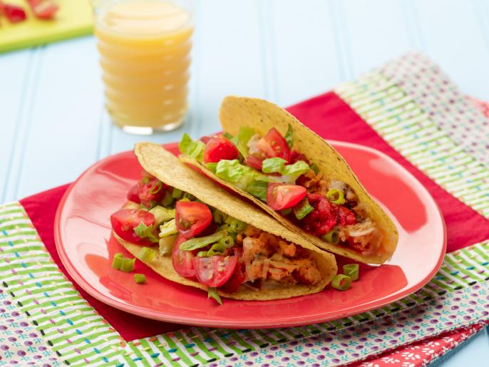

Crunchy Breakfast Tacos

Description
Add some crunch to your morning with these egg-filled breakfast tacos. Both little and big kids can help measure, and big kids can help scramble the eggs :)
Ingridients
- 8 hard ocrn taco shells
- 6 large eggs
- 1 teaspoon taco seasoning w/ salt/chili powder
- other stuff...
Steps
- Preheat the ovet to 350 degrees F.
- Crack the eggs into a bowl
- Line the center of each taco shell
- Other steps...